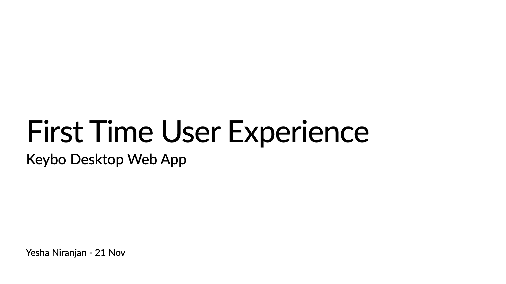
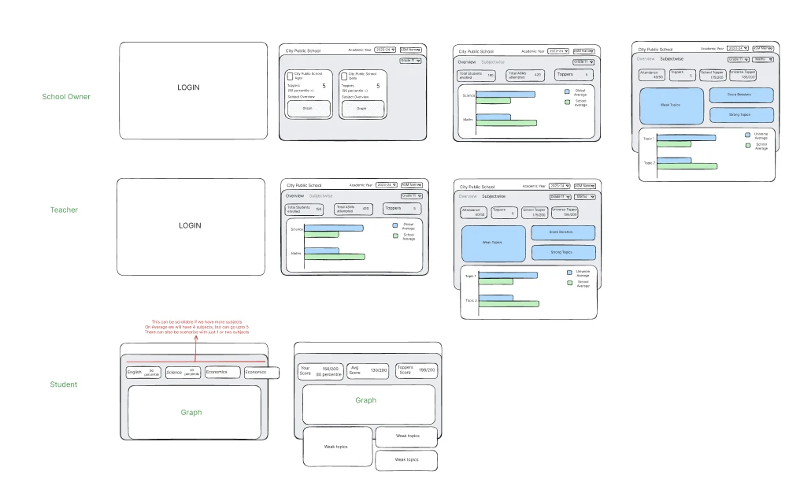
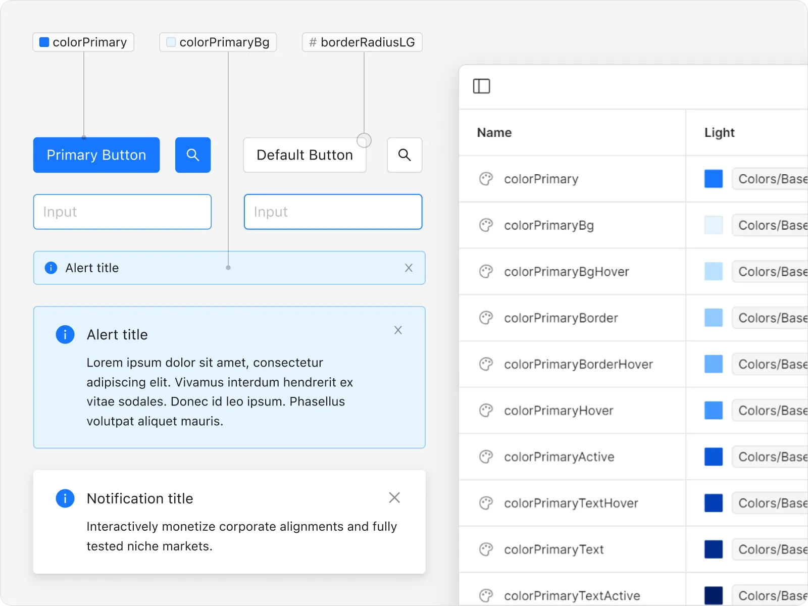

Designing Data-to-Action Learning Systems at Scale
Transform fragmented assessment data into clear, role-specific teaching actions across a multi-role learning platform.
The Mission: Transform fragmented assessment data into clear, role-specific teaching actions across a multi-role learning platform.
The Challenge: Design a unified platform for four completely different user roles — Students, Teachers, Mentors, and Ops teams — each with different mental models, within the constraints of large classrooms, limited digital maturity, and high-stakes national exams.
The Role: Oct 2023 – Apr 2025 · Benesse Holdings · Senior Product Designer. Joined to fix UI inconsistencies, reframed the entire product architecture, and led end-to-end design from heuristic evaluation through a four-product ecosystem spanning India and Japan.
I Came to Fix UI. I Stayed to Redesign Thinking.
I didn't get hired to redesign a product. I got hired to fix visual inconsistencies. What I found on day one changed everything.
On day one of my heuristic evaluation, I stopped looking at pixels and started looking at people. What I saw was a platform that had data everywhere and clarity nowhere.
Teachers were logging in to a system full of assessment results and walking away with no idea what to do next. Students were navigating multiple disconnected tools with inconsistent login flows. Operations teams were drowning in support tickets during peak exam cycles — not because the system was broken, but because it was designed for data storage, not human decision-making.
Instead of filing a design inconsistency report, I walked into the product meeting and said: "The visual problems are symptoms. The real problem is architectural. Can I show you what I mean?"
That conversation turned a UI cleanup contract into an 18-month founding product design engagement that spawned four products across two countries.
"The best design decisions I made on this project weren't visual. They were the ones I made before I opened Figma."

Four Roles. One Platform. Zero Shared Mental Models.
Users don't expect systems to be perfect. They expect systems to mirror how their work actually happens.
Navigator served four completely different types of users simultaneously — Students, Teachers, Mentors, and Operations teams. Same login screen. Same navigation. Same data architecture. Four people who needed four completely different things.
A student logs in thinking: "what do I need to practice today?"
A teacher logs in thinking: "which of my students needs help and what exactly should I do?"
A school owner logs in thinking: "how is my institution performing overall?"
An ops team member logs in thinking: "what's broken before exam season hits?"
This wasn't a design problem. This was a mental model problem. And you can't solve a mental model problem by moving buttons around.
So I slowed down. I ran user interviews focused not on what features people wanted, but on how they actually thought about their work. I mapped daily task execution. I traced where workflows broke down. I followed the support tickets back to their origin.
"Users don't expect systems to be perfect. They expect systems to mirror how their work actually happens."

The Insight Nobody Had Written Down
The platform wasn't failing because it lacked features. It was failing because it was built around how data was stored, not how humans make decisions.
Every dashboard showed aggregate numbers. Every report showed historical trends. But teachers don't think in aggregates. They think in students — specific students, specific struggles, specific moments where intervention could change an outcome.
I reframed the entire design brief from: "How do we display learning data more clearly?" to: "How do we turn learning data into the next action a teacher should take?"
That one reframe changed everything — the information architecture, the navigation model, the dashboard structure, the way performance data was visualised, and ultimately the entire product roadmap.
I redesigned the login-to-dashboard flow to be role-aware from the first tap — each persona lands in a context built for their mental model, not a generic home screen. Consistency of internal flow meant the same interaction patterns worked whether you were a teacher viewing a student's gap or an ops member reviewing a school's performance. The information moved in a way that matched how each role actually thought.
"The most valuable thing a designer can do isn't solve the brief. It's question whether the brief is solving the right problem."

Three Decisions That Changed Everything
Where design met product strategy.
Decision 1 — Seamless Role-Based Login & Onboarding. The same login screen was creating confusion across four personas. I redesigned the entry flow to be context-aware — role detection at login, persona-specific onboarding, and a dashboard that immediately reflected what that user type needed to see. Validated through role-based task scenarios with real users during peak exam cycles.
Decision 2 — Teacher-Led Actions as Primary Design Pattern. Teachers weren't just passive consumers of data — they were the platform's most important actors. I made teacher-led interventions the primary interaction model: every data view connected to a clear next action. Which student to help. What to assign. When to escalate. Tested with teachers using real planning tasks. Outcome: faster intervention setup, higher completion rates.
Decision 3 — Design System as Product Foundation. A consistent, role-aware design system wasn't just a deliverable — it was the connective tissue that would allow future products to be built on the same foundation. I built the system to be modular enough that the Japan team could adapt it for Sensei AI without starting from scratch. I prioritised operational reliability over feature velocity and monitored support tickets post-rollout to confirm improvements held during peak exam season.
"Innovation isn't adding more. It's removing everything that stands between a person and the decision they need to make."

The Numbers That Proved It
Not vanity metrics — signals that designing for action instead of reporting had fundamentally changed how teachers related to the platform.
Teachers were coming back not because they had to — but because the platform was telling them something useful every single time. Teachers reported less reliance on ops teams and faster turnaround in intervention planning.
And then something happened that no brief had asked for — the platform became the backbone for an entire product ecosystem: AI Drill, Sensei AI, and Keybo across two countries.
"Navigator didn't just solve the problem it was built for. It proved that a different kind of learning platform was possible."
What Navigator Made Possible in Japan
When the Benesse Japan team started thinking seriously about AI-assisted teaching, they had a question nobody could answer from a spreadsheet.
They'd seen what Navigator had proven in India. They knew I understood the teacher mental model deeply. And they had a vision — reduce the administrative burden on Japanese teachers by using AI to generate lesson plans, create worksheets, correct marks, and suggest all with AI-enabled chat and a seamless internal flow.
Sensei AI needed to comply with Japan's stringent education ministry regulations that restricted AI from completing student assignments directly. The AI could support teachers — but could not replace their professional judgment.
Teachers could create worksheets, build lesson plans, upload marks for AI-assisted correction, and receive intelligent suggestions — all within a conversational interface designed to feel like a trusted teaching assistant, not an automation tool.
Nemawashi: Building Trust Before Building Screens
My role wasn't to design screens. It was to build conviction.
In Japanese enterprise culture, that means Nemawashi — the practice of building consensus slowly, carefully, and thoroughly before any decision is made. You don't present a solution and ask for approval. You have individual conversations, address each stakeholder's specific concerns, build shared understanding gradually, and arrive at the decision meeting with alignment already in place.
Cross-country collaboration sessions with the Japan team. Individual stakeholder conversations to understand cultural constraints and organisational anxieties. Competitive benchmarking — Automark.io versus CoGrader — to show what the market had already validated. Heuristic evaluation of existing tools to show where they were failing Japanese teachers specifically.
The resistance wasn't about the technology. It was about trust. Japanese teachers had a fundamentally different relationship with AI tools than Western users — they needed to feel that the AI was supporting their professional judgment, not replacing it. Every design decision had to reinforce that boundary.
Context-first LLM design meant the AI never led with a suggestion — it always started with the teacher's context: which class, which subject, which student outcome. The AI was a co-author, not an author.
"The real problem wasn't 'can AI generate content?' It was 'can teachers trust it in a classroom context?' Everything I designed was in service of that second question."
What I'd Build Differently
Honest reflection from someone who'd do it again.
What I'd do differently: I'd push for longitudinal impact tracking earlier. We measured engagement and ops tickets — but I wish we'd tracked whether student outcomes actually improved over time. That data would have told a more complete story about whether faster teacher decisions led to better student performance.
I'd also expand the research into cross-team handoffs earlier. The gaps between what teachers needed and what ops teams could support were real friction points that we addressed reactively rather than proactively.
What I proved: A designer who shows up to fix UI and leaves having built the foundation for a cross-country AI product ecosystem — that's not luck. That's what happens when you treat every project like the real brief hasn't been written yet.
"Navigator became the backbone for multiple learning products — not just a single app. That's the standard I hold myself to. Build things that make other things possible."